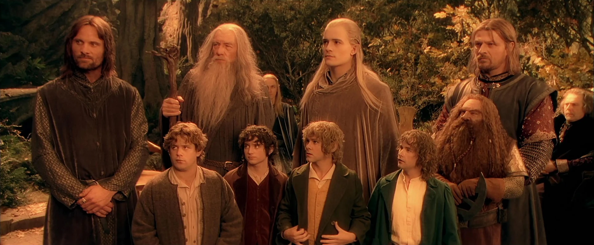

The Fellowship of the Ring
Frodo Baggins, Sam Gamgee, Merry Brandybuck, Pippin Took, Gandalf, Aragorn, Legolas, Gimli, Boromir

The Grid Layout Module offers a grid-based layout system, with rows and columns.
The Grid Layout Module makes it easy to design complex and responsive web pages without using floats and positioning:
Frodo Baggins, Sam Gamgee, Merry Brandybuck, Pippin Took, Gandalf, Aragorn, Legolas, Gimli, Boromir
